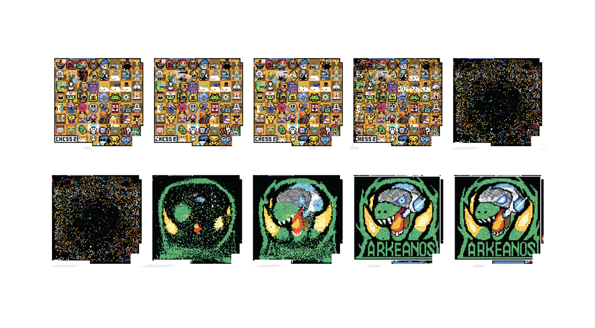

Early warning signals for transitions in Reddit's r/place
In 2017, Reddit posted a blank canvas of a million pixels to the subreddit r/place with a limited set of instructions: any user could change one pixel to a color of their choice, every five minutes. We watched as users leveraged through their subreddits or other online communities to create art representing their community on the canvas. Groups organized to select territory, create their art, and defend that territory until the end of the days-long event. This game-experiment was repeated in 2022 and 2023, with the largest showing of more than 10 million users in 2022.
In each of the events, limited space on the canvas led to fighting over territory. Some groups would attack the art of others, replacing it with their own image. In this project, we search for signals to give early warnings of these transitions in art on the canvas. We draw on decades of work in ecology using statistical indicators to detect coming transitions in ecological systems, and we combine this with machine learning to predict transitions in each artwork.
Selected works:
G Falmagne*, AB Stephenson*, SA Levin. Interpretable Early Warnings using Machine Learning in an Online Game-experiment. 2025, arXiv:2502.09880 *Authors contributed equally.